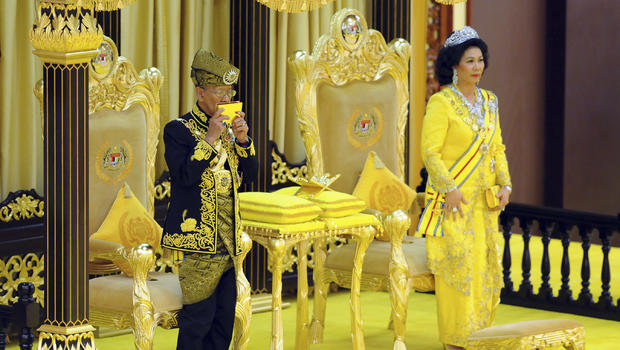
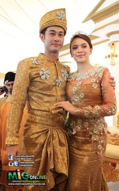

ENGLISH VERSION..........
HISTORY OF SONGKET
Songket is a fabric that belongs to the brocade family of
textiles of Indonesia, Malaysia and Brunei. It is hand-woven in silk or cotton, and
intricately patterned with gold or silver threads.The metallic threads stand
out against the background cloth to create a shimmering effect. In the weaving
process the metallic threads are inserted in between the silk or cotton weft
(latitudinal) threads in a technique called supplementary weft weaving
technique.
The term songket comes from the Malay word sungkit, which
means "to hook". It has something to do with the method of songket
making; to hook and pick a group of threads, and then slip the gold and
silverthreads in it.Another theory suggested that it was constructed from the
combination of two terms; tusuk (prick) and cukit (pick) that combined as
sukit, modified further as sungki and finally songket.Some says that the word
songket was derived from songka, a Palembang cap in which gold threads was
first woven.
The
Indonesian word menyongket means ‘to embroider with gold
or silver threads’. Songket is a luxury product traditionally worn
during
ceremonial occasions as sarong, shoulder cloths or head ties and tanjak,
a
headdress songket. Songket were worn at the courts of Kingdoms in
Sumatra
especially the Srivijaya, as the source and the origin of Malay culture
in Southeast Asia. In the early kingdom age, Songkets are
also traditionally worn as an apparel by the Indonesian royal families
in
Sumatra such as the Deli Sultanate in Medan, Serdang Sultanate,
Palembang
Sultanate in Palembang and the recently restored royal house in Jambi.
Traditionally women are the weavers of songket, however in this modern
time men
also are known to weave it as well.
Songket is known in many names in vernacular Indonesian
languages. For example, it is known as songke in Manggarai, Flores, and Bima,
Sumbawa, while it is known as songket in Bali
and Java. The Karo Batak call it jongkit. People in Ternate, Maluku, call it
suje, while the Buginese in South Sulawesi call it subbi’ and arekare’ and the
Iban Dayak in West Kalimantan call it pilih or
pileh.
ongket weaving is first, historically associated with areas
of Malay settlement in Sumatra, and the production techniques could have been
introduced by Indian or Arab merchants. In Indonesian tradition, songket is
associated with Srivijaya, a wealthy 7th to 13th century maritime trading
empire based on Sumatra, because Palembang is the famous songket producer in
Indonesia. Songket is a luxurious textile that required some amount of real
gold leaves to be made gold threads and hand-woven into exquisite fabrics,
hictorically the gold mines are located in Sumatra
hinterland; Jambi and Minangkabau highlands. Although gold threads was found
buried in the Srivijaya ruins in Sumatra, along with unpolished rubies and
pieces of gold plate, there is no corroborating evidence that the local weavers
used gold threads as early as 7th century to early 8th century.Songket
probably developed in later period somewhere in Sumatra.
However, according to Kelantan tradition this weaving
technique came from the north, somewhere in the Cambodia-Siam region and
expanded south into Pattani, and finally reach the Malay court of Kelantan and
Terengganu as early as the 16th century. The weaving of songket
continues as a small cottage industry on the outskirts of Kota Bharu and
Terengganu, Terengganu weavers believe that songket weaving
technique was introduced to Malaysia from India through Sumatra's Palembang and
Jambi where it probably originated during the time of Srivijaya (7th to 11th
century).
Much documentation is sketchy about the origins of the
songket but it is most likely that songket weaving was brought to Peninsular
Malaysia through intermarriages between royal families. This was a common
occurrence in the 15th century for sealing strategic alliances. Production was
located in politically significant kingdoms because of the high cost of
materials; the gold thread used was originally wound with real gold leaf.
Songket as king's dress was also mentioned by Abdullah bin
Abdul Kadir writings in 1849.
 | |||||

| Asian Royal |
SONGKET MAKING
There are two categories of songket weaving equipments; the
main weaving equipment made from wooden or bamboo frame; and the supporting
equipment which includes thread stretching tool, motif making tool, thread
inserting and picking tools. The materials for making songket consist of cotton
or silk threads or other fibers as the base fabric and decoration threads made
from golden, silver or silk threads. It is believed that in ancient times, real
gold threads were used to create songket; the cotton threads were run along
heated liquid gold, coating the cotton and creating gold thread. However today
because the scarcity and the expensiveness of real gold threads, imitation gold
or silver threads are commonly used instead.
The songket technique itself involves the insertion of
decorative threads in between the wefts as they are woven into the warp, which
is fixed to the loom. They are inserted as part of the weaving process, but not
necessary in the making of the cloth. There are four types of supplementary
weft weaving technique: continuous, discontinuous, inlaid and wrapped.
Songket weaving is done in two stages, weaving the basic
cloth with even or plain weaving and weaving the decoration inserted into basic
cloth, this method is called "inlay weaving system". The shining
gold, silver or silk threads were inserted and woven into the plain weave base
cloth in certain motifs, creating a shimmering effect of golden pattern against
darker plain background. Songket weaving is traditionally done as a part-time
job by young girls and older women in between their daily domestic chores. The
complicated process of songket making is believed to cultivate virtues, as it
reflects the values of diligence, carefulness and patience.
The making of Songket Terengganu
MALAY VERSION......
SONGKET
Songket merupakan sejenis kain yang biasanya ditenun dengan
mesin tradisional, dan mempunyai corak rumit benang emas atau perak. Perkataan
songket bermaksud membawa keluar atau menarik benang daripada kain atau menenun
menggunakan benang emas dan perak.
Dari segi sejarah, ia hanya dipakai golongan bangsawan -
keluarga kerabat diraja dan orang besar negeri. Kehalusan tenunan dan kerumitan
motif corak songket ketika itu menggambarkan pangkat dan kedudukan tinggi
seseorang pembesar. Ia telah terkenal di Malaysia dan Indonesia sejak abad
ke-13 yang lampau.
Songket punya nilai sejarah yang tinggi sebagai fabrik
warisan agung. Selain mengangkat martabat si pemakai, motif dan warna tenunan
songket melambangkan kedudukan seseorang.
SEJARAH SONGKET
Sejarah dari mana datangnya kain songket itu tidak dapat
dipastikan dengan tepat, namun dan asal usul perkataan songket dikatakan
berasal daripada ‘menyungkit’ kerana dalam bahasa Siam ‘kek’ membawa erti
menyungkit selain ‘songkok’ (China) membawa maksud yang sama.
Mengikut Robyn Maxwell (1990), pengetahuan orang Melayu
mengenai teknik songket mungkin diambil daripada orang Cina yang memperkenalkan
bahan logam tetapi kehadiran budaya dari Timur Tengah, Parsi, Turki dan Moghul
(India)
telah memperkukuhkan lagi penghasilannya.
Tidak banyak diketahui mengenai asal songket, tetapi
kemungkinannya penenunan songket berkembang di Malaysia melalui perkahwinan antara
keluarga diraja, yang merupakan strategi penyatuan biasa sekitar abad ke-15.
Songket menggunakan teknik tenunan, di mana benang emas
ditenun antara benang sutera pada kain latar. Fabrik yang mewah dan mahal ini
menggambarkan struktur sosial dikalangan bangsawan Melayu.
CORAK DAN MOTIF
Corak dan motifnya memaparkan ciri-ciri unik identiti orang
Melayu dan sekali gus mencerminkan cita rasa budaya bangsa yang mekar dalam
persekitaran yang kaya dengan keindahan dan keunikan.
CORAK SONGKET
Secara umumnya corak songket terdiri daripada tiga jenis susunan bunga iaitu: -
- Susunan Bunga Penuh
- Susunan Bunga Berterabur
- Susunan Bercorak
Kategori corak songket atau susunan bunga yang kebiasaannya ada dipasaran seperti berikut:-
- Songket Corak Penuh
- Songket Bunga Dalam
- Songket Istana
- Songket Proton Saga
- Songket Corak Berdiri
- Songket Sutera Pokok
- Songket Sutera Kerawang
- Songket Corak Muar
- Songket Bunga Tabur
- Songket Jarum Emas
MOTIF SONGKET
Motif corak atau bunga songket diilhamkan daripada pemerhatian pada alam semulajadi dan juga benda dipersekitaran. Para penenun songket biasanya datang dari desa atau kampung dimana songket sememangnya diusahakan dikampung-kampung secara tradisonal. Oleh yang sedemikian, motif-motif songket adalah berdasarkan kepada tumbuh-tumbuhan, haiwan, persekitaran alam, benda, objek dan kuih-muih.
Para penenun lazimnya mempunyai daya imaginasi yang sangat kuat yang mana ianya boleh menterapkan corak yang kreatif pada motif songket. Setiap motif mempunyai makna dan falsafah yang tersirat. Berikut beberapa contoh motif songket:-
Motif corak atau bunga songket diilhamkan daripada pemerhatian pada alam semulajadi dan juga benda dipersekitaran. Para penenun songket biasanya datang dari desa atau kampung dimana songket sememangnya diusahakan dikampung-kampung secara tradisonal. Oleh yang sedemikian, motif-motif songket adalah berdasarkan kepada tumbuh-tumbuhan, haiwan, persekitaran alam, benda, objek dan kuih-muih.
Para penenun lazimnya mempunyai daya imaginasi yang sangat kuat yang mana ianya boleh menterapkan corak yang kreatif pada motif songket. Setiap motif mempunyai makna dan falsafah yang tersirat. Berikut beberapa contoh motif songket:-
-
Motif Semut Beriring
Hasil ilham daripada binatang terkecil yang selalu bekerja sama mampu membuat sarang yang besar, mampu mengangkat barang-barang yang jauh lebih besar dari badannya, dan bila bertemu selalu berangkulan.
-
Motif Itik Pulang Petang atau Itik Sekawan
Hasil pemerhatian dari binatang peliharaan.
-
Motif Burung Balam
Selalu hidup rukun dengan pasangannya, mencerminkan dari kerukunan hidup suami isteri dan persahabatan.
-
Motif Puncak Rebung
Dikaitkan dengan kesuburan dan kesabaran.
-
Motif Awan Larat
Dikaitkan dengan kelemah-lembutan budi, kekreatifan, dan sebagainya.
-
Motif Lebah Bergantung/Bergayut
Haiwan yang selalu memakan yang manis dan bersih (sari bunga), kemudian menyumbangkannya pada mahkluk lain dalam bentuk madu dan selalu hidup berkawan-kawan dengan damainya.
-
Motif Tapak Sulaiman
Hasil pemerhatian daripada alam semulajadi, lazimnya di negeri Sarawak.
-
Motif Tampuk Manggih (Tapak Manggis)
Hasil pemerhatian daripada pokok buah-buahan.
-
Motif Lawi Ayam
Hasil pemerhatian dari binatang peliharaan.
-
Motif Bunga Raya
Hasil pemerhatian daripada bunga-bungaan persekitaran.
-
Motif Paku-Pakis
Hasil pemerhatian daripada jenis tumbuhan-tumbuhan.
-
Motif tepung talam, Seri Kaya, Wajik
Hasil pemerhatian daripada jenis-jenis kuih yang menjadi kegemaran raja-raja pada ketika dahulu.
-
Motif Bunga Bintang
Hasil pemerhatian daripada alam semulajadi.
PROSES PEMBUATAN SONGKET
Secara ringkasnya proses menenun songket adalah dengan
menggunakan teknik menyungkit iaitu menggunakan lidi buluh atau bilah nibung
melalui benang loseng (warp) di permukaan alat tenun yang dipanggil kek tenun.
Proses menyungkit dilakukan setelah benang karat butang disediakan. Benang
karat butang digunakan untuk membuat reka corak atau sulaman benang emas.
Mencelup benang
Benang perlu dibersihkan sebelum dicelup ke dalam pewarna.
Setelah pewarnaan dibuat benang perlu di keringkan, sebelum kerja selanjutnya
dilaksanakan.
Melerai benang
Pelenting yang diperbuat daripada buluh kecil digunakan
untuk melilit benang. Proses ini dilakukan dengan bantuan alat darwin dan alat pemutar rahat.
Menganeng benang
Proses membuat benang loseng yang diregang di alat penenun
bagi menentukan saiz panjang atau jumlah helai kain yang akan ditenun.
Menggulung
Benang-benang yang diregang di alat menganeng (ianian)
digulung dengan sekeping papan loseng.
Menyapuk benang
Setelah benang loseng dimasukkan ke dalam gigi atau sikat
jentera, kerja-kerja menyapuk dilakukan. Dua urat benang loseng dikaitkan
melalui setiap celah gigi jentera.
Mengarak benang
Karak dibuat daripada benang asing yang digelung. Benang
loseng berangka genap dan ganjil akan diangkat turun naik secara berselang seli
sewaktu menenun.
Menyongket benang
Proses mereka corak di atas benang loseng dengan menggunakan
alat yang di panggil lidi dengan menyongketkan benang loseng sebanyak tiga atau
lima lembar dan
kemudian diikat dan dikenali sebagai proses ikat butang.
Menenun
Alat torak yang diisi dengan benang pakan atau benang emas,
dimasukkan ke kiri dan kanan di celah-celah benang loseng mengikut corak yang
telah ditentukan hinggalah menjadi sekeping kain. Kain yang telah siap ini
dipotong mengikut saiz.
Tenun songket
Pemakaian Songket kini
Kain sampin yang diperbuat daripada songket.


Hari ini, pemakainya lebih menyeluruh, tidak terhad kepada
kerabat diraja. Cara pemakaiannya juga lebih meluas, bersesuaian dengan majlis
begitu juga corak dan motifnya yang semakin kontemporari, sesuai dengan
perubahan dan peredaran masa. Suasana yang melatari songket kini turut berubah
selaras dengan peredaran masa.
Kini, usaha untuk memastikan kesinambungan industri songket
masih berterusan dan secara relatifnya berjaya mencapai tahap yang memuaskan
sehingga songket semakin popular digunakan sebagai busana majlis perkahwinan,
hantaran perkahwinan, cenderahati dan hiasan dinding.



Peningkatan kos penghasilan sutera, benang emas dan perak
serta perubahan fesyen dan trend sedikit sebanyak mempengaruhi industri songket
seawal pertengahan abad ke-20.